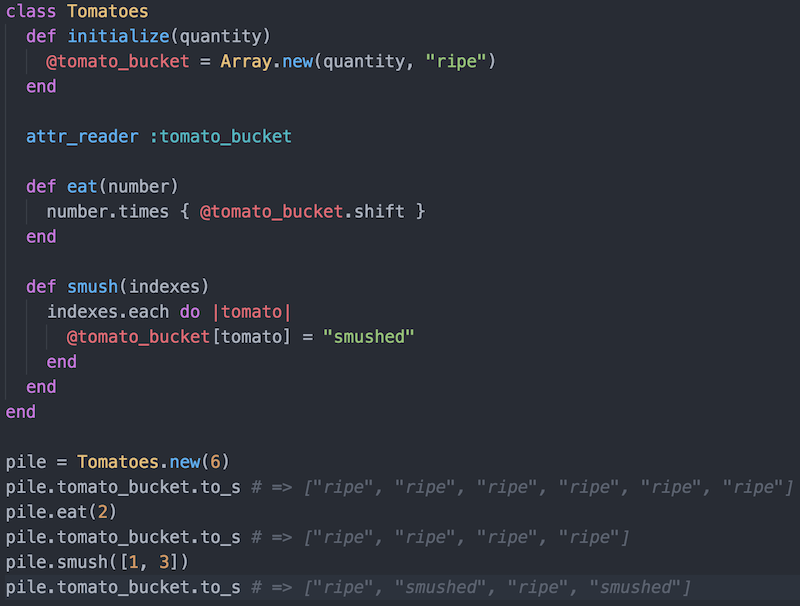

DBC Fiddler Crabs 2016 Blog
January 18, 2016
What is a Ruby class?
In Ruby, and other object oriented programming languages, a class is a blueprint for how to make an object. You may even call a class an object factory. Classes describe an object's state and behavior. You might go so far as to say that a recipe for baking cookies is like a class for objects of type "cookie." You could say that a class for lawn mowers is like assembly instructions and operation instructions for a lawn mower. Here's a class for tomatoes:
In this code example, a Tomatoes class is defined. There is a @tomato_bucket instance variable, which represents a...bucket of tomatoes. This variable can be accessed by all the methods in the class, unlike the other variables in the class, which are all local to the methods in which they are defined. In the initialization method, a specific quantity of tomatoes is placed in the bucket, and they are all "ripe". The next method, attr_reader, allows us to see, but not change (at least not with this method), the tomato bucket from outside the class. The third method, Tomatoes#eat, requires you to choose how many tomatoes you want to eat, then it takes them out of the bucket. Below the class, amongst the driver methods, you can see us eat two tomatoes, and the bucket has lost two. The last method, Tomatoes#smush, smushes particular tomatoes inside the bucket. The method requires you to choose which tomatoes to smush. We smushed the second and fourth tomatoes, as represented by the indeces 1 and 3. I guess our bucket is more of a line of tomatoes.